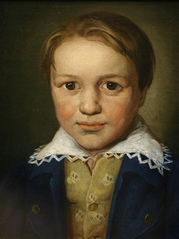
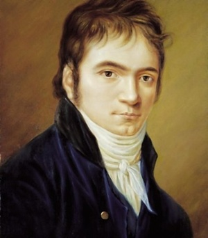

Бетховен – композитор, який жив у епоху Великої французької революції, прожив, прямо скажемо, «собаче» життя. Він пройшов крізь випробування, зчепивши зуби. Сутність його музики – боротьба людини з долею, із собою, з постійними стражданнями, поклоніння революції та розчарування у її «героях» (Наполеоні Бонапарті). Вона допомагає людям переносити труднощі, фізичні та моральні муки, долати страх, горе та втрати.
Бетховен — ключова фігура класичної музики в період між класицизмом і романтизмом, один із композиторів у світі, що найбільш виконуються. Він писав у всіх жанрах, що існували в його час, включаючи оперу, музику до драматичних спектаклів, хорові твори. Найзначнішими у його спадщині вважаються інструментальні твори: фортепіанні, скрипкові та віолончельні сонати, концерти для фортепіано, для скрипки, квартети, увертюри, симфонії. Творчість Бетховена справила значний вплив на симфонізм XIX і XX століть.
Раннi роки

Людвіг ван Бетховен народився 16 грудня 1770 року в Бонні, хрещений там же наступного дня.
Його батько, Йоган ван Бетховен, був співаком-тенором у придворній капелі. Мати, Марія-Магдалина, до заміжжя Кеверіх, народилася в сім'ї придворного шеф-кухаря у Кобленці. Батьки Людвіга одружилися 1767 року.
Дід, Людвіг ван Бетховен, був родом з Мехелена (Південні Нідерланди). Про голландське коріння роду також говорить приставка «ван». Він служив у тій же капелі, що й Йоган, спочатку співаком (у нього був бас), а потім – капельмейстером.
Батько композитора мріяв зробити зі свого сина другого Моцарта і почав навчати гри на клавесині та скрипці. У 1778 році в Кельні відбувся перший виступ Людвіга. Проте чудо-дитиною Бетховен не став, і батько, швидко охолонувши до витівки, доручив хлопчика своїм колегам і приятелям. Один навчав Людвіга грі на органі, інший – на скрипці.
У 1782 році в Бонн приїхав органіст та композитор Крістіан Готлоб Нефе. Він став справжнім учителем Людвіга. Нефе відразу зрозумів, що у хлопчика талант познайомив підлітка з «Добре темперованим клавіром» Баха та творами Генделя, а також з музикою старших сучасників: Ф. Е. Баха, Йозефа Гайдна та Вольфганга Амадея Моцарта. Завдяки Нефі було видано перший твір Бетховена – варіації на тему маршу Дресслер. Тоді автору виповнилося дванадцять років, і він уже працював помічником придворного органіста.
Після смерті діда матеріальне становище сім'ї погіршилося. Людвігу довелося рано покинути школу, але він самостійно вивчив латину, італійську та французьку, багато читав.
Серед улюблених письменників Бетховена були Гомер та Плутарх, Шекспір, Гете та Шіллер.
Юнiсть

У цей час Бетховен почав писати музику, але не поспішав друкувати свої твори. Багато що написане в Бонні згодом було ним перероблено. З юнацьких творів композитора відомі три дитячі сонати та кілька пісень, у тому числі «Сурок».
1787 року Бетховен відвідав Відень і прийшов до Моцарта. Прослухавши його імпровізацію, той вигукнув: "Він усіх змусить говорити про себе!"
Але заняття не відбулися: Бетховен дізнався про хворобу матері та повернувся до Бонна. Вона померла 17 липня 1787 року. Сімнадцятирічний юнак був змушений стати главою сім'ї та взяти на себе турботу про молодших братів. Він вступив до оркестру як альтист.
У 1789 Бетховен, бажаючи продовжити освіту, починає відвідувати лекції в університеті. Саме в цей час у Бонн надходить звістка про революцію у Франції. Студент Бетховен поринає в ідеї революції, які живитимуть його творчість все життя.
Проїздом з Англії в Бонні зупинився Гайдн, який схвально відгукнувся на композиторські досліди Бетховена. Юнак вирішує їхати до Відня і восени 1792 вирушає до Відня.
Приїхавши у Відень, Бетховен почав заняття з Гайдном… Згодом Людвіг стверджував, що той нічого його не навчив; заняття швидко розчарували і учня, і вчителі. Бетховен вважав, що Гайдн був недостатньо уважний для його старань; а Гайдна лякали не тільки сміливі на ті часи погляди Людвіга, а й досить похмурі мелодії, що в ті роки було малопоширеним.
«Ваші речі прекрасні, це навіть чудові речі, але то тут, то там у них зустрічається щось дивне, похмуре, тому що ви самі трохи похмурі та дивні; а стиль музиканта – це він сам», – писав Гайдн своєму геніальному учню…
Незабаром Гайдн поїхав до Англії та передав свого учня відомому педагогові та теоретику Альбрехтсбергеру. Зрештою Бетховен сам вибрав собі наставника – Антоніо Сальєрі.
Бетховен-піаніст
Вже у роки життя у Відні музикант завоював славу піаніста-віртуоза.
Фортепіано лише почало входити в європейський ужиток, змінивши клавесин з його своєрідним швидко загасаючим, коротким, «цокаючим», «металевим» звуком. Бетховен сміливо протиставляв крайні фортепіанні регістри (на клавесині і спочатку на фортепіано грали в основному в середині клавіатури), широко використовував педаль (до неї тоді теж зверталися рідко) та масивні акордові співзвуччя. По суті, саме він створив фортепіанний стиль, далекий від вишуканої, мереживної манери клавесиністів, що застосовують безліч дрібних прикрас, що заповнюють звук клавесина, що швидко загасає.
Цей дещо важкий, похмурий стиль можна почути у його фортепіанних сонатах №8 «Патетичної» (назва дано самим композитором), №13 та №14. Обидві мають авторський підзаголовок Sonata quasi una Fantasia (Соната майже фантазія). Сонату №14 поет Людвіг Рельштаб згодом назвав «Місячною», і хоча ця назва підходить лише до першої частини, вона закріпилася за всім твором. Тоді композитор був закоханий у свою ученицю, італійську графиню Джульєтту Гвіччарді, якій і присвятив «Місячну сонату». Втім, шлюб не відбувся, дівчина віддала перевагу генію-простолюдину його безталанному родовитому колегу, за якого і вийшла заміж. Їхній шлюб розпався, і через 20 років Джульєтта прийшла просити у Бетховена грошей. Пізніше у листі до друга музикант написав: «Вона плакала, але я знехтував нею»…
Характер та посил музики
Музикант відрізнявся крайньою різкістю суджень та поведінки. Одного разу, коли він грав у публічному місці, один із гостей почав розмовляти з дамою; Бетховен відразу обірвав виступ і додав: «Таким свиням я не гратиму!». І жодні вибачення та вмовляння не допомогли.
Іншим разом Бетховен гостював у князя Ліхновського, який дуже поважав композитора і був шанувальником його музики. Князь захотів, щоб Бетховен зіграв перед присутніми. Композитор відмовився. Ліхновський почав наполягати і навіть наказав виламати двері кімнати, де замкнувся Бетховен. Обурений композитор покинув маєток і повернувся до Відня. На ранок він надіслав Лихновському листа: «Князь! Тим, чим я є, я зобов'язаний самому собі. Князів існують і існуватимуть тисячі, а Бетховен – тільки один!»
Однак, незважаючи на таку сувору вдачу, друзі вважали Бетховена досить доброю людиною, оскільки композитор ніколи не відмовляв їм у допомозі.
Усі знають початкові такти бетховенської 5-ї симфонії, про яку він сказав: «Так доля стукає у двері».
Ведучи виснажливу щоденну боротьбу з життям, із самим собою, Бетховен, який не раз думав накласти на себе руки, який прожив півжиття абсолютно глухим, сказав: «Я схоплю свою долю за горлянку». Це був великий мученик, великий борець і великий музикант.
 Бетховен – композитор, який жив у епоху Великої французької революції, прожив, прямо скажемо, «собаче» життя. Він пройшов крізь випробування, зчепивши зуби. Сутність його музики – боротьба людини з долею, із собою, з постійними стражданнями, поклоніння революції та розчарування у її «героях» (Наполеоні Бонапарті). Вона допомагає людям переносити труднощі, фізичні та моральні муки, долати страх, горе та втрати.
Бетховен – композитор, який жив у епоху Великої французької революції, прожив, прямо скажемо, «собаче» життя. Він пройшов крізь випробування, зчепивши зуби. Сутність його музики – боротьба людини з долею, із собою, з постійними стражданнями, поклоніння революції та розчарування у її «героях» (Наполеоні Бонапарті). Вона допомагає людям переносити труднощі, фізичні та моральні муки, долати страх, горе та втрати.